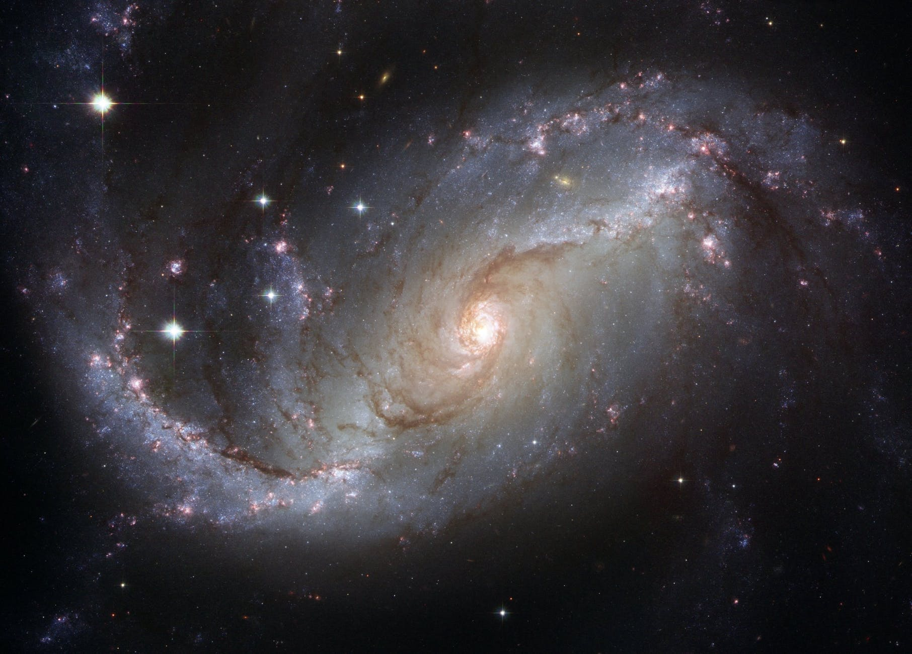
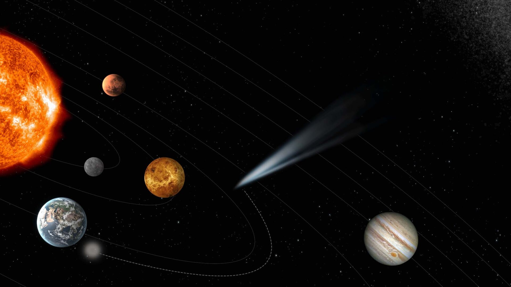

Amazing facts about universe
When you look into the night sky, you are looking back in time
The stars we see in the night sky are very far away from us, so far the star light we see has taken a long time to travel across space to reach our eyes.This means whenever we look out into the night and gaze at stars we are actually experiencing how they looked in the past. For example, the bright star Vega is relatively close to us at 25 light-years away, so the light we see left the star 25 years ago; while Betelgeuse in the constellation of Orion is 640 light-years away, so the light left the star around 1370. Other stars we see are further away still, so we are seeing them much deeper in their past.
Scientists are looking for evidence of extraterrestrial life on Earth
The Search for Extra-Terrestrial Intelligence is a project to discover whether intelligent life exists elsewhere in the universe and how we may contact extraterrestrial species. The search includes looking for life on other planets and moons. For instance, some of Jupiter’s moons are promising places to look for evidence of primitive life, but the search for extraterrestrial life includes scientific research on Earth. If scientists can disocver evidence life has generated independently more than once it would suggest life could occur in more than one place.
The Hubble telescope allows us to look back billions of years into the past
The Hubble Telescope enables us to look towards very distant objects in the universe. Thanks to this remarkable piece of engineering NASA has been able to create some incredible images, one of which is the Hubble Ultra Deep Field. Created using images from the telescope from 2003 and 2004, the incredible picture displays a tiny patch of the sky in immense detail; it contains 10,000 objects, most of them young galaxies, and acts as a portal back in time. In one picture we are transported 13 billion years into the past. It is named after astronomer Edwin Hubble.
There could be 500 million planets capable of supporting life in our galaxy
Scientists are searching for extraterrestrial life on “Goldilocks Planets“. Planet Earth seems to have exactly the right conditions for life to exist – its distance from the Sun means the temperature is right, water can exist as a liquid solid and a gas, and there are the right combination of chemical compounds available to build complex life forms. In the Milky Way alone there are estimated to be 500 million potential Goldilocks planets, so if life can exist in places other than Earth there is a huge number of potential planets on which it might thrive.
Major milestones
brightness_1The first artificial Earth satellite, Sputnik 1, was launched by the Soviet Union on October 4, 1957.
brightness_1First animal, dog Laika, was launched into space on november 3, 1957.
brightness_1The first human to go into space, Yury Gagarin, was launched, again by the Soviet Union, for a one-orbit journey around Earth on April 12, 1961.
brightness_1Apollo 11 crew members Neil Armstrong and Edwin (“Buzz”) Aldrin made the first lunar landing on July 20, 1969.
brightness_1First soft landing on another planet (Venus) on december 15, 1970.
brightness_1First resident crew to occupy the International Space Station on november 2, 2000.
brightness_1 Chang'e 4 spacecraft made the first landing on the Moon's far side, the side that always faces away from Earth on january 3, 2019.
brightness_1First picture of a black hole was taken by Event Horizon Telescope, or EHT on april 10, 2019.
-

- 
-

- 